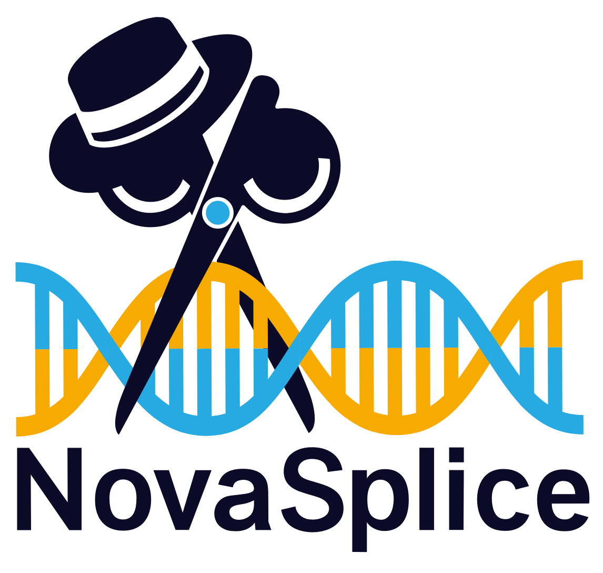
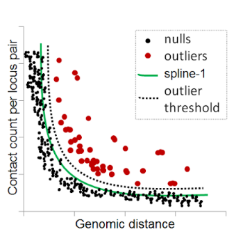
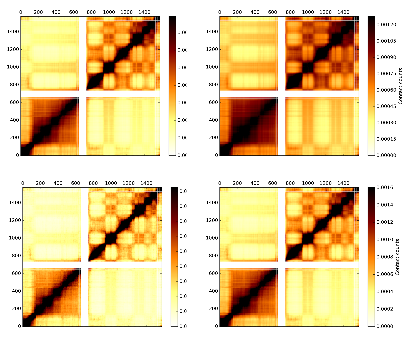
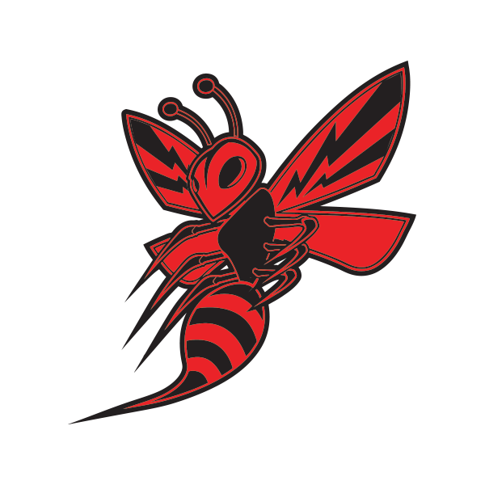
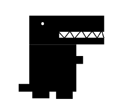

Arya Kaul
Simdigree
Simdigree is a tool to simulate pedigrees using the VCF files from runs of SLiM, a forward time population genetics simulator. The purpose of the project is to attempt to quantify the probability a given rare or undiagnosed disease is monogenic, oligogenic, or polygenic given family history. All code is freely available on Github.
NovaSplice is a command line tool to predict novel splicing events due to single nucleotide polymorphisms within non-coding regions. The tool uses 3 inputs, (1) a reference genome, (2) a genome annotation file (GTF) and (3) a VCF file. NovaSplice then loops through every variant in the VCF file and computes the score of the canonical splice sites closest to that variant using maxentscan. Next, NovaSplice computes the score of every splice site containing that variant and compares it to the canonical splice site's score. If the novel splice site's score is close to or greater than the canonical splice site, it is reported. Finally, NovaSplice outputs an ordered list of predicted novel splice sites. All code is available on Github, and an executable command line version of the tool may be installed through bioconda.
NovaSplice
 Fit-Hi-C
Fit-Hi-C is a Python tool to generate statistical confidence estimates for Hi-C data to reveal significant chromatin contacts. Fit-Hi-C works by fitting a monotonically decreasing spline to the probability of a contact given the genomic distance of the interaction genetic loci. The null hypothesis may then be refined by refitting a new spline after discarding outliers. Fit-Hi-C was first developed by Dr. Ferhat Ay, and I've been working on optimizing the code for speed and memory usage. Fit-Hi-C is freely available and easily installable through the Python Package Index, Github, or Bioconda.
HiCKRy is a Python3 tool to normalize Hi-C contact maps using the Knight-Ruiz algorithm for matrix balancing. The normalization is done under an assumption of equal visibility i.e. if there were no bias then each locus in the genome would give rise to an equal number of reads in a Hi-C experiment. This normalization allows the user to correct for all factors that may cause bias without explicitly modeling them. The KR algorithm has been demonstrated to be significantly faster than the iterative method employed by Imakaev et al., and has been shown to be scalable to high resolution Hi-C datasets. HiCKRy is freely available on Github.
HiCKRy
 HotWASp
Genome wide association studies (GWAS) represent a powerful tool to interrogat the relationship between genetic variation and diseases. Unfortunately, conventional GWAS studies suffer from an extremely high statistical burden due to the extreme number of hypotheses being tested. To help boost the statistical power of GWAS, HotWASp was developed. HotWASp works by running heat propagation on a given gene-gene network with initial heats inversely correlated with the p-values found through GWAS. HotWASp was developed as part of the final project for BNFO 286, a graduate level course on Network Biology and Biomedicine taught by Dr. Trey Ideker. Code is freely accessible through Github.
Transposable elements (TEs) are unique DNA sequences capable of autonomously 'moving' around the genome. Found abundantly throughout eukaryotic and prokaryotic genomes, TEs are capable of driving genomic evolution and gene regulation by enabling translocation, causing exon shuffling, and increasing genetic diversity. TErex presents a simple tool to easily identify all transposable elements given an input fasta sequence file using the Dfam database. TErex was developed as part of the final project for CSE 180, Biology meets Computing. The tool is freely accessible through Github.
 TErex